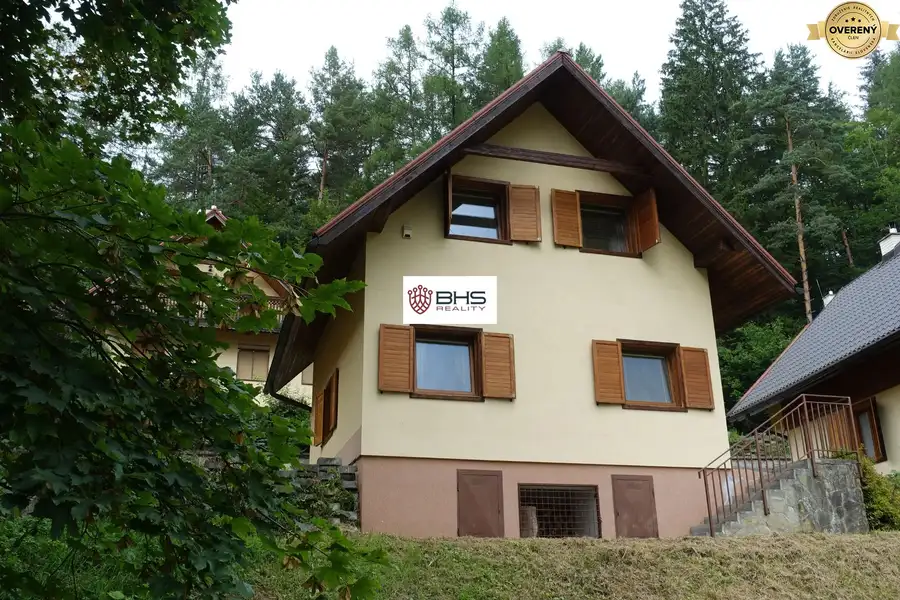
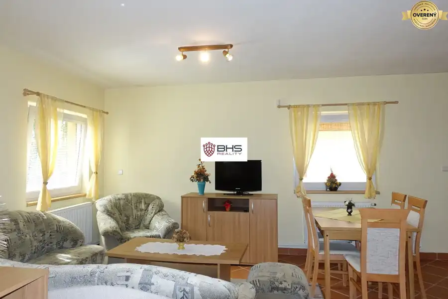
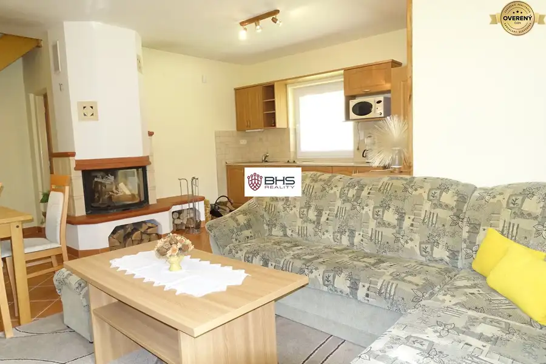
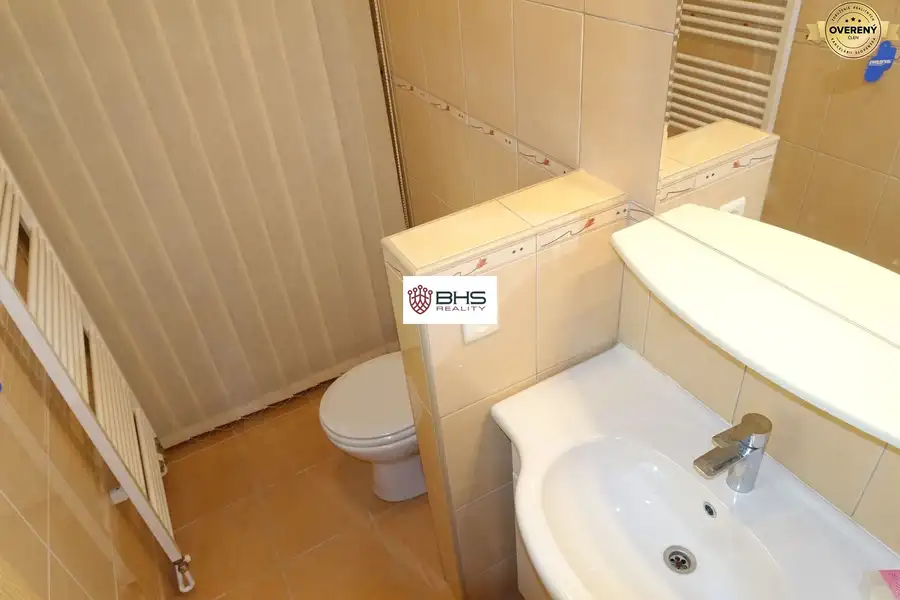
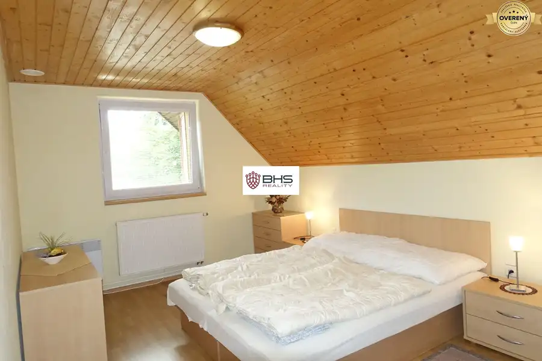
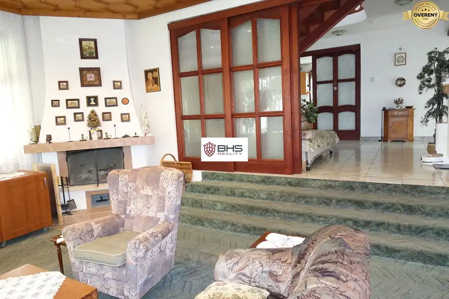
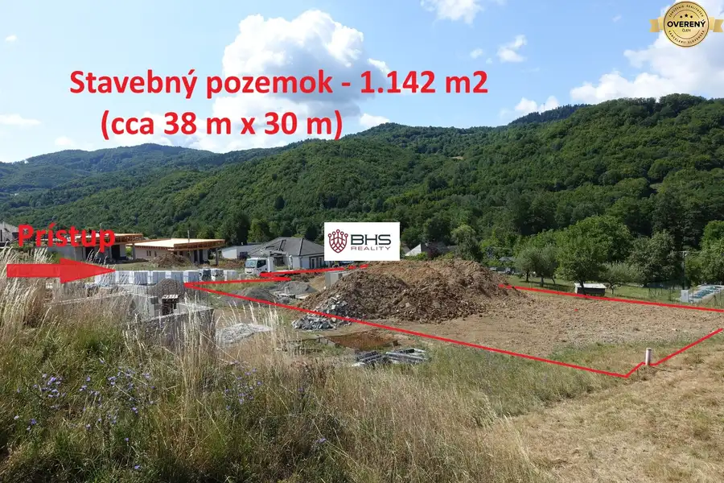
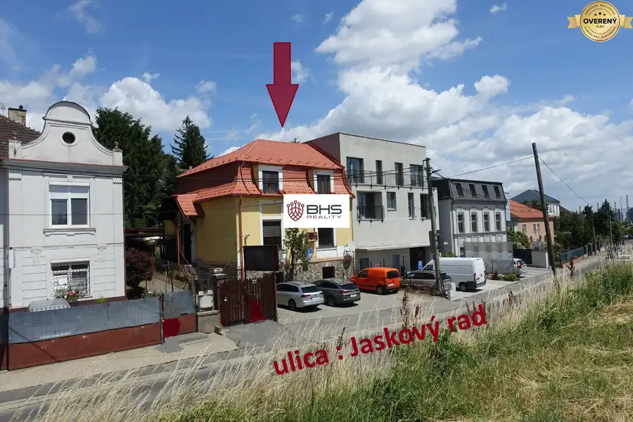

PREDAJ – celoročne obývateľná chata - Lazy p. Makytou, pozemok 353 m2
Lazy-pod-makytoucertov, Lazy pod MakytouČertov





- Dispozícia3-izbový
- Plocha61 m²
- Stavpôvodný
- Vlastníctvoosobné
- Energetická triedaC
O nehnuteľnosti
Plánujete si kúpiť chatu s možnosťou kvalitného celoročného využívania a bývania? A navyše, ktorá je umiestnená v lone nádhernej prírody pohoria Javorníky, v území, ktoré je súčasťou chránenej krajinnej oblasti, v lokalite plnej lyžiarskych vlekov, turistických chodníkov a cyklotrás? A tiež hľadáte oddych a unikáte pred zhonom mestského života ...?
Máme pre Vás ponuku – predaj celoročne obývateľnej rekreačnej chaty v chatovej oblasti v osade Čertov, v obci Lazy pod Makytou, okres Púchov. V bezprostrednom okolí chaty sa nachádza ďalších deväť chát a hotel. Ku chate vedie asfaltová cesta, s možnosťou parkovania dvoch vozidiel. K chate patrí mierne svahovitý pozemok s výmerou 309 m2, chatou zastavaná plocha tvorí výmeru 44 m2 (s pozemkom spolu 353 m2). Úžitková plocha chaty je 60,80 m2
DISPOZÍCIA:
Dvojpodlažná chata je podlažiami rozdelená na dennú (prvé podlažie) a nočnú časť (druhé podlažie).
Na prvom podlaží sa nachádza vstupná chodba, obývacia izba, kuchyňa, jedáleň, kúpeľňa (umývadlo a toaleta) a ... ako v žiadnej kvalitnej chate, ani tu nesmie chýbať krb, ktorým pomocou teplovzdušných rozvodov, sú vykurované aj izby na vrchnom podlaží.
Na druhé podlažie vedie drevené schodisko. Sú tu 2 spálne a kúpeľňa (sprchovací kút, umývadlo a toaleta). Z okien obidvoch spální je výhľad na okolitú prírodu a na športový areál priľahlého hotela, v ktorom sa dá aj prestravovať, aj si v bazéne zaplávať.
Chata je vybavená zabezpečovacím systémom. Kúrenie je variabilné:
1. Elektrickými konvektormi
2. Krbom – teplovzdušným rozvodom do miestností I. a II. NP, plus v chate je ústredné teplovodné kúrenie (radiátor v každej miestnosti) – ohrev vody do radiátorov cez výmenník nainštalovaný nad krbovou vložkou
Všetky okná v chate sú plastové s vonkajšími drevenými okenicami. Podlahy na druhom podlaží sú laminátové, prvé podlažie má keramickú dlažbu.
Inžinierske siete: elektrina, voda z vodného zdroja hotela František – chata má meranie spotreby vody (verejný vodovod).Odpad je riešený spoločnou čističkou odpadových vôd pre všetky chaty.
K domu patrí parkovacie miesto pre jedno motorové vozidlo, ktoré je hneď pri chate, druhé parkovacie miesto je pod kopcom vo vzdialenosti nie väčšej ako 100 metrov.
Z vonkajšej strany chaty v suteréne sú priestory, ktoré sa dajú využiť na uskladnenie dreva alebo ako príbytok pre štvornohého miláčika.
Pozemok je neoplotený, hranicu pozemku z východnej strany tvoria vysadené tuje. Okrasné kríky a kvety dotvárajú nádhernú atmosféru prostredia.
Chata bola daná do užívania v roku 2005 a môže slúžiť na rekreáciu a bývanie 4 – 5 člennej rodiny.
Osada Čertov je vyhľadávanou oblasťou milovníkov turistiky a lyžovania. Lyžiarske vleky sa nachádzajú v bezprostrednom okolí chaty, najbližší vlek (pre najmenších) je vzdialený iba 200 m od chaty, ďalšie vleky sú do 1 kilometra a do vyššej nadmorskej výšky na vrch Javorníkov s názvom Kohútka sa dá dostať do 5-ich minút cesty autom. Cesta z hlavného mesta Bratislavy ku chate trvá 2 hodiny, cesta zo Žiliny trvá 1 hodinu.
Lokalita očarí a patrí k najkrajším zážitkom tohto druhu trávenia voľného času, turistiky a lyžovania na Slovensku. Súčasťou aktívneho trávenia času je tu možnosť využiť aj ponuku neďalekého hotela Wellness Hotel Čertov na zrelaxovanie.
Chata s okolím je dokonalým miestom, kde sa dajú zregenerovať sily, užiť si čerstvý vzduch, upokojiť myseľ a otvoriť sa komunikácii s prírodou, užiť si to, čo nám ponúka.
Volajte : Iva Bedejová, tel. č.: ,
píšte :
Patríme (BHS Reality, s.r.o.) k členom Realitnej únie SR a ZRKS. Garancia profesionálnych právnych služieb, komplexného poradenstva a bezproblémového priebehu realizovanej kúpy/predaja.
Všetky technické údaje podliehajú zmenám a sú založené na informáciách poskytnutých majiteľom.
©Text a fotografie sú autorským dielom a majetkom realitnej kancelárie BHS Reality, s.r.o..
Parametre
- Rozloha pozemku
- 353 m²
- Zastavaná plocha
- 44 m²
- Úžitková plocha
- 61 m²
- Poschodie
- neuvedené
- Počet poschodí
- 2
- Počet izieb
- 3
- Vlastníctvo
- osobné
- Stav
- pôvodný
- Status
- aktívne
- Odvoz odpadu
- áno - separovaný
- Voda
- verejný vodovod
- El. napätie
- 230V
- Plyn
- nie
- Kanalizácia
- ČOV
- Internet
- iné
- Kúpeľňa
- sprchovací kút
- Vykurovanie
- vlastné – kombinované
- Parkovanie
- vlastné vyhradené
- Inžinierske siete
- áno
- Postavené z
- tehla
- Zariadenie
- zariadený
- Zateplený objekt
- áno
- Krb
- áno
- Klimatizácia
- nie
- Káblová televízia
- áno
- Energetický certifikát
- C
- Bezbariérový prístup
- nie
- Okná
- plastové
- Terén
- mierny svah
- Prístupová cesta
- asfaltová cesta
- Dátum zverejnenia
- 2024-08-02
Kde to je
Mohlo by Vás zaujímať

Rodinné domyNové 750 000 €PREDAJ – dva RD, 7-izb. a 2-izb., Dunajská Lužná, pozemok 966 m2 Dunajská Lužná 7-izbový537 m²
PozemokNové 89 990 €PREDAJ – pozemok pre rodinný dom, 1.142 m2, H. Hámre, okr. Žarnovica Horné Hámre 1142 m²
Rodinné domyNové 589 000 €PREDAJ – 5-izb. rodinný dom na Jaskovom rade, ÚP 250 m2, poz. 334 m2 Nové Mesto, Bratislava 5-izbový250 m²